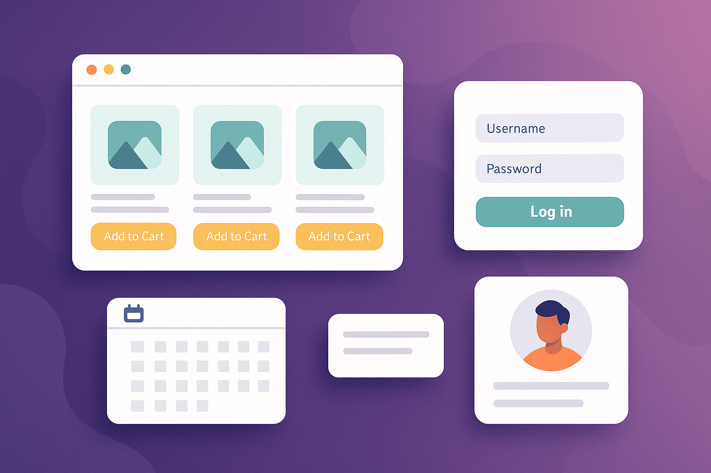
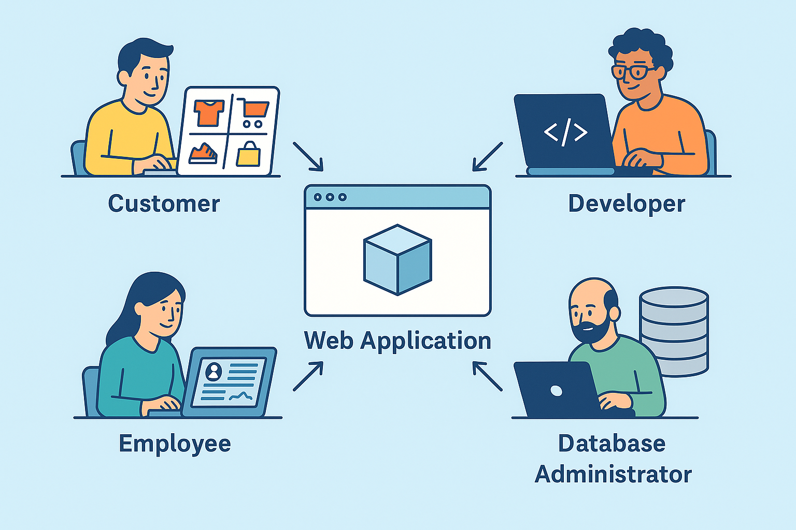

Web apps are powerful tools that run inside a browser. They allow users to perform actions like shopping, booking, or managing accounts directly online without installing software
Web applications are interactive programs that run through a web browser. Unlike regular websites that just show information, web apps let users input, process, and store data in real time. Examples include Gmail, Facebook, Amazon, and online banking platforms.
An example of a modern web application interface that users interact with through a browser.
Most web apps rely on databases to store and retrieve user data. For example, when you log in to a website, your username and password are checked against data stored in a database. Here’s a simplified step-by-step of how this works:
A simplified flowchart showing how user input is processed through a server and connected to a database back and forth.
Web applications serve different users in a business setting. While customers and employees use the front-end, developers and administrators work behind the scenes to make everything run smoothly. Each group interacts with the web app in a different way:
In summary, a business web app brings together multiple roles: customers interact with the storefront, employees manage operations, and developers ensure everything runs securely and efficiently in the background.
Four key user roles interacting with a web app: customers, employees, database administrators, and developers.